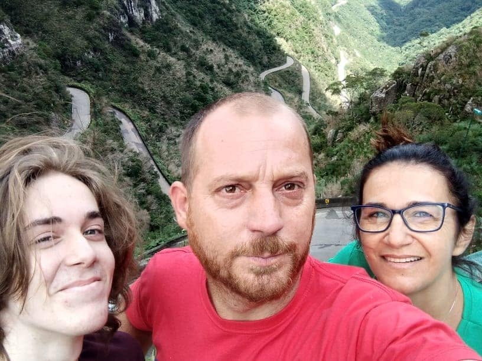

Ponto de partida
Um desvio pra ti.
Pai, fiz uma coisinha pra ti.
É só seguir a estrada.
Ponto de partida
Pai, fiz uma coisinha pra ti.
É só seguir a estrada.
Primeira curva
Mas aí pensei: já que eu passo o dia fazendo coisa no computador, hoje dava pra fazer uma pra ti.
Segunda curva
Tu aí em Itá, eu aqui em Floripa. Hoje o abraço vai ter que ir por aqui. Tô com saudade, pai.
Chegamos a Floripa
Obrigado por tudo, pai. Que esse ano te traga saúde, uns bons dias de descanso e bastante motivo pra rir.
Te amo. Na próxima vez que a gente se vir, tem abraço de verdade.
Do teu filho.
